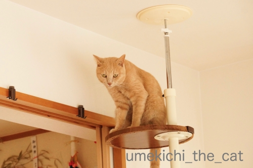

父と息子の話し合い [梅吉]

以前の記事で
ちょっとだけ触れたのですが・・・
キャットタワーのハンモック、
梅吉さんは相変わらず無関心w
そこで！秘策を！！
クリアハンモックを
真ん中付近に移動しました。
あ、それだけ？でしたか？(⌒-⌒;
そうしたら写真の通りの有様で。
クリアハンモックの時は
登る事も稀だったのに・・・
ハンモックのあった場所で
くつろぐ我が家の一人息子w

神妙な顔をしているのは

おとーさんに
「どーして梅吉はてっぺんにクリアハンモックがあるとガン無視だったのに
くどくどくどくどくどくど・・・・・・」と説得されているから。
息子は聞く耳持つんでしょうか。

このあと梅吉はこちらのベッドに移動www
クリアハンモックは深さがあるから入らないのか？とも思いましたが
このカゴも深さがあるので深さは関係ない模様です。
クリアハンモック、人事は尽くしたので天命を待つのみ！
数年後に「梅吉入りました！」なんて記事になるかもしれません。
その時うっすら思い出していただけると嬉しゅうございます(〃▽〃)
あにゃたは好きなところで好きなだけ寝てくださいませ。
今月初め近所の小さい方の神社に茅の輪が立ったので出勤前のおっとと梅吉と一緒に行ってきました。
朝早いので私たちの他にもう一人の参拝者がいるのみ。
キャリーの中で梅吉さんも神妙な面持ちです＾＾
八の字を描いてくぐってきました。
先日マンション全体のインターホン工事があり新しくなりました。
呼び出し音が鳴ったり鳴らなかったり、画像が乱れたりなどなど
不調なお宅が数件あり全体工事になったのです。
受話器がなくなってスッキリ！
今までは一階の共用玄関のモニターだけでしたが
オプションで我が家の玄関前にもカメラをつけて
訪問者のチェックができるようになりました。
録画機能もついているので後から確認も可能。
そしてモノクロからカラーへ。
玄関先のモニター、マストとは思わないけどやっぱりあると安心です＾＾

カフェオレ色の梅吉

梅吉 2023年8月10日 永眠


梅吉と出会った譲渡会

犬猫の理由なき殺処分ゼロ
妄想広告
UMEKICHI 光

爆発的に早い！
時々攻撃的！
Thanks to Mr.Boss365
爆発的に早い！
時々攻撃的！
Thanks to Mr.Boss365

お猫様のお気に入りってどうやって決まってるんでしょうねぇ( ^ω^ )
お父さんに諭されても、きっと気が向かない限り使用してくれないんでしょうねぇ(*_*)
クリアハンモックだと、ツルツル滑るからイマイチなのかなぁ(⌒-⌒; )
by ニッキー (2019-07-08 07:10)
ハンモックの形が嫌？？
それともクリアだから嫌？？
梅吉さん！謎です（笑
いつかまったりした姿を見れるのか？
楽しみですね(#^.^#)
by きぃ (2019-07-08 07:52)
神社に茅の輪 ステキ！くぐってみたいな〜
インターホンに録画機能〜 凄い！
by チャー (2019-07-08 09:01)
梅吉さんと神社で茅の輪くぐり行ってきたのですね！
これで今年も安心ですね。
by ma2ma2 (2019-07-08 10:17)
思い通りにならないのがお猫さま、でございますね(^▽^;)
我が家も張り切って購入した籐のベッドには寄り付かず、崩壊寸前の果物カゴで寝ています・・・。
クリアで下が見えるのが嫌なのか、肌触りが苦手なのか。
我が家にも2年経ってから使い始めた猫ベッドがあります。おっとさん、気長に頑張りましょう(#^^#)
新しいインターホン、いいですね♪
ウチも玄関先のモニターはなくて、実際に来るのは宅配便ぐらいだけれど、やっぱりカメラがあればより安心ですよね！
by ゆきち (2019-07-08 12:19)
こんにちは。
梅吉くん、いい感じいで頂点に君臨ですね。
聞く耳を持つと思いますが・・・
下僕さんの指示には従わないのがニャンズです（笑）
反抗期もありますので「梅吉入りました！」実現すると思います。
「茅の輪」緑色の装飾？初めて見た感じです。
「キャリーの中で梅吉さん」気付かなかった（笑）ナイスです。
昨年、小生宅も「マンション全体のインターホン工事」しました。
画像がクリアで記憶も出来るので便利です。時々変な人（未確認）が押してます？
音が鳴ると、小生猫「ピクッと」するのは変わらない感じです。
オプションで玄関モニターありましたが・・・
玄関確認ほとんどないのない感じ？ボスママに却下されました！？(=^･ｪ･^=)
by Boss365 (2019-07-08 12:39)
梅吉さん、てっぺんは好きなのね‥
説得は功を奏すでしょうか？
クリアハンモック、透明なのが落ち着かないんじゃないかなぁ‥あるいはツルツル感？ いつの間にか、慣れて、ある日‥！？
茅の輪？ 何だか素敵。うちの方には全くありませんねえ。
梅吉さん、ちゃあんと連れて行かれるのがいい子だわ～！＾＾
玄関先モニターは必須です‥広告ばっかり何度も来るから、それらしい人だともう居留守です＾＾；
by sana (2019-07-08 15:30)
こんにちは。再訪です。
勝手に「梅しごと」使わせて頂きました。
著作物「梅しごと」の使用料・印税を支払う事が出来ません（涙）
「茅の輪」成る程です。近所神社さん「丁寧なおしごと」してますね！？(=^･ｪ･^=)
by Boss365 (2019-07-08 16:10)
梅吉くーーーん！！！
それはお父さんにくどくど言われるよぉぉ(笑)
ハンモックがなくなったとたん、最上階を制するなんてｗｗ
透明ハンモック、質感が苦手なのかな。
うみも依然として嫌がります。
つるっていく感覚が苦手なのかもしれないよねー。
まあ、うみは透明ハンモックじゃなくて、どのハンモックも嫌いみたいだけど^^;
今年も茅の輪くぐり、梅吉くんも一緒ですね。
インターホンの受話器って邪魔だよね。
酔っ払ってぶつかると、受話器落ちるし(笑)
うちも数年前に受話器無しに変わりました^^
by リュカ (2019-07-08 16:46)
説得されてもボク知らニャいって感じかしら(笑)
お猫様の好みというかツボがよく分かりません＾＾
そのうち忘れたころに使ってくれるかもｗｗ
わー。茅の輪くぐり、梅ちゃんもご一緒されたのですね♪
それはご利益ありますよ(´ー｀*)ｳﾝｳﾝ
モニター付きインターホン、我が家もつけていますよ。
録画も可能だと便利ですよね♪
by カトリーヌ (2019-07-08 17:42)
何となくおとーさんに説得されてあ”～ミミタコだぜ～って
半目になってふてくされている感じに見えます(笑
クリアハンモック、何かのきっかけでスルっと入る日が来ることを
楽しみにしていますよ。
茅の輪というのは、くぐるといいことがあるのですか？
八の字絵を描いて通るのがお作法？
by marimo (2019-07-08 18:43)
息子というのはたいてい聞く耳持ちません。でも恐ろしいことに聞いてるフリはうまいんですよ(-_-;)
by palpal (2019-07-08 20:19)
梅吉様、神妙な顔で、おとーさんの説得を聞いてますね。
何か言いたいことありそうですか？（笑）
クリアなハンモック（笑）長い目で待ってましょう（笑）
インターホン新しくなりましたね。
なになに、受話器がないのですね〜いいなぁ
なになに、玄関前のカメラでチェック、いいなぁ
録画もカラーも、全部全部いいなぁ（笑）
by kiki (2019-07-08 21:01)
我が家の猫さんも四角や丸い箱の中に入って寝るのが好きです。
床に直に置いた箱です。
もしかしたら、高い場所にある箱は寝違えると落ちてしまうのを知っているのでは。
そうだとしたら、梅吉さんはおりこうさんですね。
でも、私の分析は当たった事がほとんどありません^^;
by riverwalk (2019-07-08 21:08)
梅吉さーーん、そりゃないよー。ハンモック入ってーーー。
期待して待っていますよ。
茅の輪くぐり、静岡では輪くぐりさんと呼んでました。
輪が柱？と共にどどーんとあるのにびっくり。
私が知ってるのは門の内側に丸っと作られてました。
だから、八の字にはくぐれないなぁ。
インターフォン、うちも似たようなタイプに数年前に変わりました。
一昨日、私がトイレに入っている時に宅急便が来たんだけど、パートナーが開けられず、帰られてしまったorz
by ChatBleu (2019-07-08 21:33)
クリアハンモック、入りやすい反面、出づらいのかなあ。
気長に待つしかないですね。^^;
かごベッドで佇む梅吉さん、目がうつろ～♪
おお、茅の輪くぐりですね。
これで無病息災ばっちり！
by yes_hama (2019-07-08 21:51)
やっぱり梅吉さんもお気に入りの場所がいいんですよね～
ちなみにうちの子は、息子不在時の息子の部屋が大好きです(;´∀｀)
by 50oyaji (2019-07-08 22:02)
クリアカップは残念ですね。こういう警戒されるものは最初床に置いておいて入るようになってからタワーに設置がいいのですけど。梅吉さんは怖がりではないので素材感が嫌いなのかもしれないですね。
by zombiekong (2019-07-09 00:24)
クリアハンモックは、下が透けてるからイヤなのかな？（ﾟ□ﾟ）
by 英ちゃん (2019-07-09 00:33)
扉を開ける前に相手が確認できるのは重要だと思います＾＾
クリアハンモックにバスタオルを敷いたら入りますかね？
どんどん薄い生地に変えていったらどうなる？
by ぽちの輔 (2019-07-09 06:38)
クリアハンモックに慣れるといいね^^
by ニコニコファイト (2019-07-10 07:00)
うーむ、高さでもない、深さでもない。
なんで嫌なんやろねー(^_^)
あと、何年もかかるのでしょうか？？？
by よーちゃん (2019-07-10 08:43)